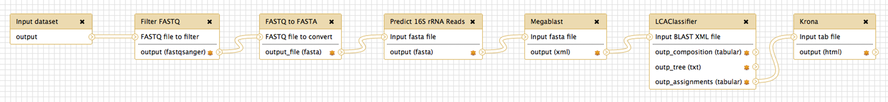
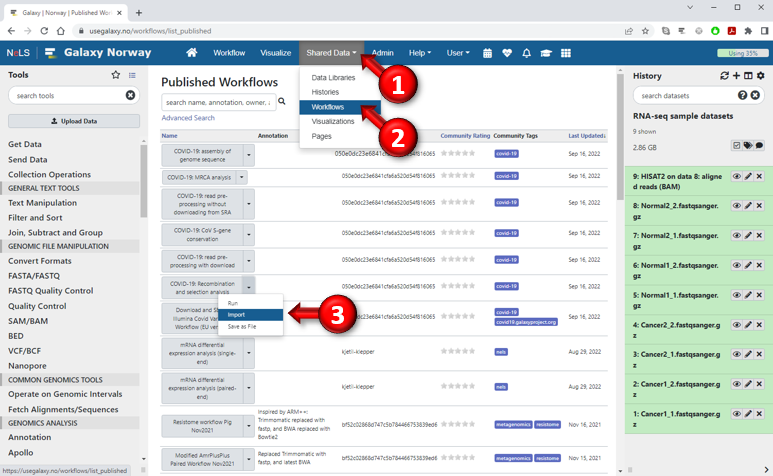
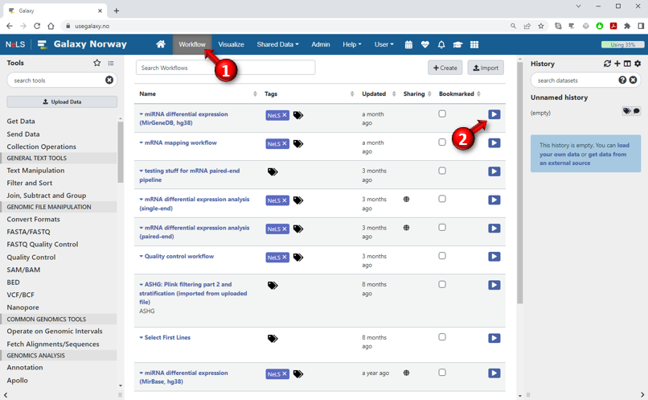
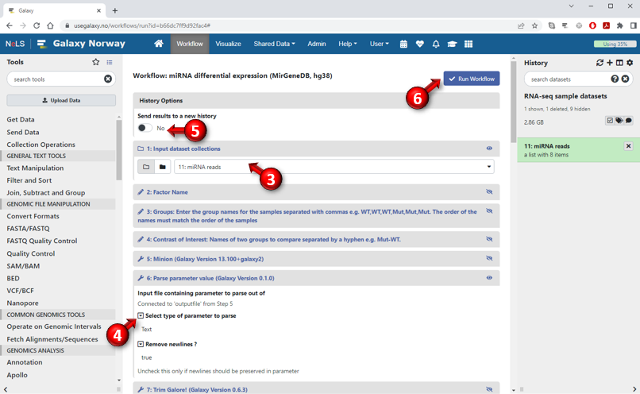

A
workflow (also called
pipeline) is a string of tools connected such that the output from one tool functions as the input for another,
thus allowing multi-step analyses to be executed as a single unit. UseGalaxy.no offers several ready-made workflows that researchers can
use to analyse their data. Click on "Shared Data" in the top menu bar and select "Workflows" to see a list.

Example of a NeLS Galaxy workflow
Before you can use a workflow for the first time you must
import it to your own workspace.
- Click on "Shared Data" in the menubar at the top of the screen
- Select "Workflows" from the menu to bring up an overview of all the published workflows available on that server
- Find the workflow you want to use and click the down-arrow near the right edge of the button. Then select "import" from the context-menu

After you have imported a workflow, you can access it by clicking on "
Workflow" in the menubar at the top of the screen
or clicking "
All workflows" at the bottom of the tools panel.
You can also make the workflow directly available from the Workflows section at the bottom of the Tools panel by checking off the "bookmarked"
box in the fifth column of the workflows list (see image below).
- To run a workflow you have imported or created, select "Workflow" in the menu bar
at the top of the screen to show all your available workflows
- Find the workflow in the list and press the corresponding "play" button in the last column.
Alternatively, if you have included the workflow in your personal workflows menu, you can click on the workflow in the Tools panel.

Selecting to run a workflow will bring up the workflow execution form where you can choose the input datasets and set other parameters.
Depending on how the workflow is designed, many of the parameters may have been set in advance.
By default, only the values that are required to be set by the user (such as the input dataset) are shown in the form.
However, you can click the "Expand to full workflow form" link at the bottom of the page to show all the steps of the workflow
and tinker with individual parameter settings for each tool, as shown in the image below.

- Steps that require input from the user will be expanded in this view. This will always include the input datasets which must be specified before the workflow can be executed.
Other steps will be collapsed but you can expand them by clicking on the title of the step.
- To adjust a parameter value that has already been set in advance by the workflow designer,
click on the small box with the downward triangle in front of the parameter name to make the value editable.
- The datasets created when running the workflow will normally be added to your current history, but if you select "Send results to a new history",
the datasets will be added to a new history that you can name yourself
- After you have specified all the required (and possibly optional) parameters, press the "Run Workflow" button to start executing the workflow